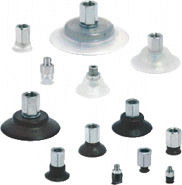
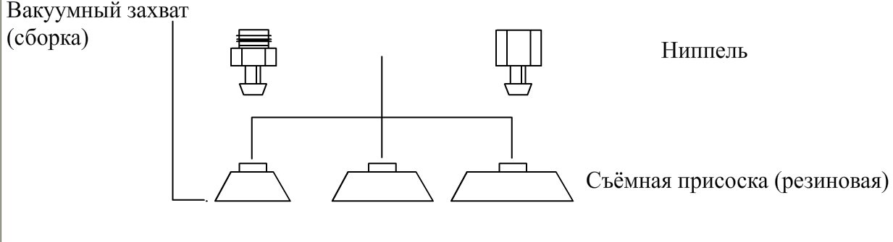

Применение: Преимущества Общие характеристики Схема сборки
- Захват плоских изделий с гладкой или неровной поверхностью;
- Модель из силикона позволяет захватывать изделия, имеющие высокую температуру.

- Широкий диапазон диаметров
- Материал: NBR, силикон.
- Низкий профиль с малым объёмом полости под присоской позволяет уменьшить время цикла захвата или использовать менее производительный вакуумный генератор
- Компактное исполнение позволяет удерживать объект при больших ускорениях и силах, воздействующих с разных направлений. Данные присоски удобно использовать при большой скорости перемещения.
- Опорные стойки в нижней части присоски уменьшают вероятность пластической деформации тонкостенных объектов
Описание
жёсткие износостойкие присоски, состоящие из присоски из NBR или силикона и соединительного ниппеля
Конструкция
ниппели и присоски предварительно не собираются. - диам. 3,5 - 50 мм соединяются непосредственно с ниппелем.
В присоски диаметром от 60 до 95 мм завулканизирована плита, на которую монтируется ниппель
Примечание
возможна замена резиновой части
